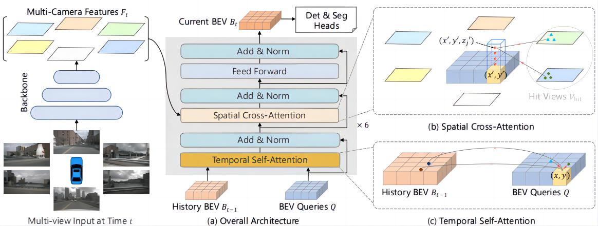
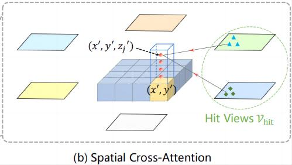
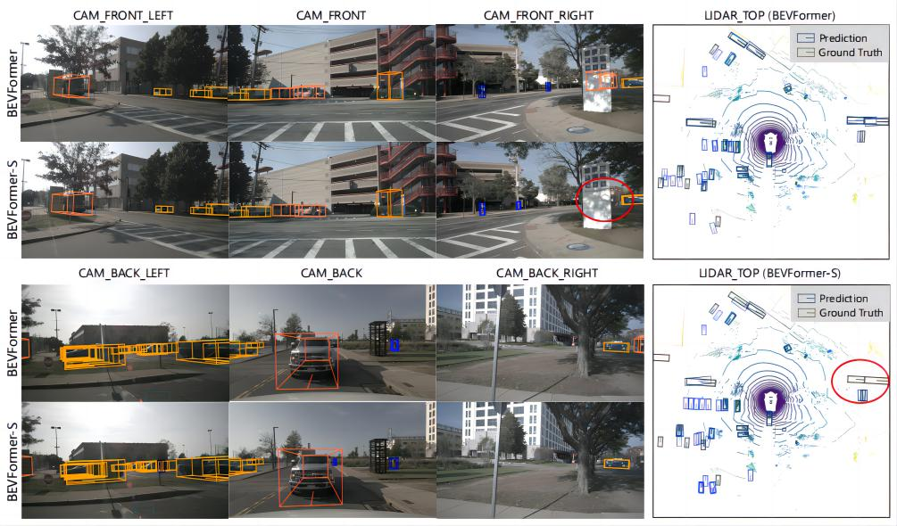
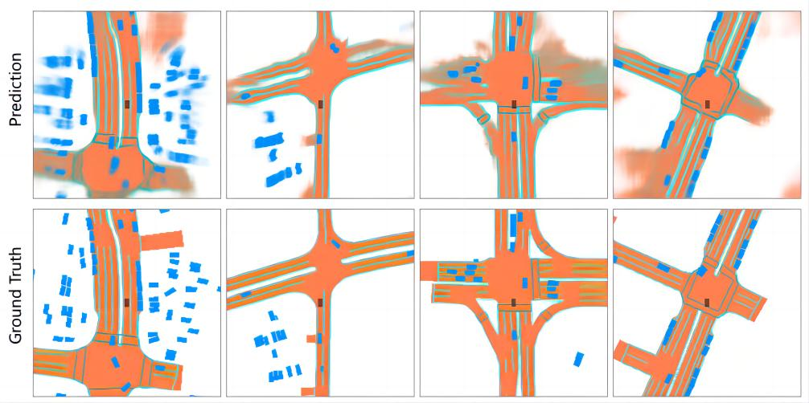

BEVFormer——论文笔记¶
综述¶
会议时间：ECCV 2022
主要思想¶
3D空间感知对于自动驾驶、机器人等各种应用至关重要，尽管对于激光雷达的方法取得了显著的进展，可以很好地用于感知物体的深度信息，但是相机在感知任务中所承担的角色同样也很重要，因为其部署成本低，并且相机捕获的图片可以用于检测远距离物体、识别基于视觉的道路元素（例如交通信号灯、停车线）等等。在自动驾驶任务中，常见的做法是从多个摄像头给出的二维图像来感知现实的三维世界，从而完成3D目标检测或者地图分割等任务，这类算法设计过程最重要的就是要考虑如何实现跨相机的信息交互，从多个相机提取整体的特征表示，随着Transformer、注意力机制在视觉上的普及应用，这一过程逐渐可以被很好地实现。
鸟瞰图（bird-eye-view, BEV）是一种常用于周围场景表示的方法，因为他可以清晰地呈现物体的位置和规模，适用于各种自动驾驶任务，虽然以前的地图分割方法证明了BEV的有效性，但是基于BEV的方法在3D目标检测中并不能体现很好地检测性能，根本原因就是难以准确地实现从2D平面到BEV特征的映射，即无法很好地解决跨相机信息交互的问题，无法生成准确的BEV特征。还有一种方法就是基于深度信息来生成BEV特征，这类方法对于深度数值和深度分布的准确性很敏感，BEV的特征表示容易受到复合误差的影响（原文直接翻译的）。不准确的的BEV特征会严重影响下游任务的性能。由于Transformer中使用了注意力机制，可以动态地聚合有价值的特征，因此作者基于TF模块设计了一款不依赖深度信息的BEV特征生成算法，可以自适应学习BEV特征。
这里提到的复合误差指的是什么？
BEV特征是连接时间和空间的理想桥梁，这也是自动驾驶任务中使用BEV特征执行感知任务的另一个动机。对于人类的视觉感知系统而言，时间信息在推理物体的运动状态和识别被遮挡的物体方面起着至关重要的作用，许多视觉领域的工作已经证明了使用视频数据的有效性。然而，现有基于多摄像头的3D目标检测算法很少利用时间信息，在自动驾驶任务中，场景物体变化很快，简单地叠加跨时间戳的BEV特征会带来额外的计算成本和干扰信息。受递归神经网络（RNN）的启发，作者利用BEV特征递归地传递从过去到现在的时间信息，这与RNN模型的隐藏状态具有相同的思想。
综上所述，作者提出了一种基于Transformer的BEV编码器，称为BEVFormer，它可以有效地聚合来自多视图相机的时空特征和历史BEV特征，由BEVFormer生成的BEV特征可以支持多种3D感知任务，如3D目标检测、地图分割等等。算法包括三个关键的设计：①网格状BEV查询向量（grid-shaped BEV queries），功能类似tokens，通过注意力机制灵活地融合时间和空间信息（查询向量为一组可学习的参数）；②空间交叉注意力模块，用于从多个相机图像中聚合空间特征；③时间自注意力模块，从历史BEV特征中提取时间信息，有利于运动目标的速度估计和严重遮挡物体的目标检测。借助BEVFormer生成的统一特征，该模型可以与不同的任务头协作，从而完成各种端到端的环境感知任务。
方法¶
BEVFormer整体结构如下图所示，共有六层编码器，与传统Transformer结构不同，这里新引入了BEV查询向量、空间交叉注意力和时间自注意力。具体地来说，BEV查询向量是网格状的可学习参数，旨在通过注意力机制从多摄像头视图中查询BEV空间中的特征；空间交叉注意力和时间自注意力用于根据BEV查询来查找和聚合来自多相机的空间特征、来自历史BEV的时间特征。

推理阶段，在时间步t中，我们将多相机所拍摄的图像传入backbone中（例如ResNet101），获得不同相机视角下的图像特征F_t=\{F^i_t\}^{N_{view}}_{i=1}，其中i和N_{view}分别表示相机序号和相机个数，同时，我们保留了前一时间戳t-1的BEV特征B_{t-1}作为图像先验，在每个编码器层，我们首先使用BEV查询向量Q，通过时间自注意力从B_{t-1}中查询时间信息，之后使用BEV查询向量Q，通过空间交叉注意力从多个相机特征F_t中查询空间信息，最后传入前馈网络，输出细化后的BEV特征，作为下一编码器层的输入。经过6层编码器的叠加运算，BEV查询向量会经过时空信息的交替优化表示，最终会生成当前时间戳t下统一的BEV特征B_t，以BEV特征B_t作为输入，3D检测头和地图分割头可以对3D边界框和地图等感知结果进行预测。
注：两次注意力均以BEV查询向量为中心，融合历史BEV特征和多个视角的图像特征。
BEV查询向量¶
作者首先预定义了一组网格型可学习的参数Q\in R^{H\times W\times C}作为BEVFormer的查询向量，其中H,W为BEV平面的空间形状，具体地来说，位于Q中p=(x,y)的查询向量Q_p\in R^{1\times C}负责表示BEV平面中相应的网格单元区域，BEV平面中的每个网格单元对应于实际尺寸的s米，在默认情况下，BEV特征的中心对应于汽车的位置。将BEV查询向量Q输入到BEVFormer之前，为其添加了可学习的位置编码。
空间交叉注意力¶
由于多相机3D感知任务通常需要输入多组分辨率很高的图片，传统的Transformer多头注意力机制需要消耗很大的计算量，因此，这里作者采样可变形注意力模块（具体可见DeDETR）来实现空间上的交叉注意力，这是一种高效的注意力层，其中每个BEV查询向量Q_p仅与相机视图中感兴趣的区域交互（只利用有限个采样点计算注意力），然而，可变形注意力最初是为2D感知设计的，因此需要对3D场景进行一些调整。
空间交叉注意力的计算过程如下图所示：

首先将BEV平面上的每个查询提升为柱状查询，从柱状查询中采样N_{ref}个3D参考点，之后将这些点投影到2D视图中，对于一个BEV查询，投影的2D点并不会落在（击中）所有视图上，例如下图(x',y')只落在了右侧两个视图上，即单个BEV查询向量并不会与所有视图都有对应关系，这里我们称被击中的视图为V_{hit}，之后，我们将这些2D点作为查询向量Q_p的参考点，并从这些参考点周围的命中视图V_{hit}中采样特征，最后，对所采样的特征进行加权求和（添加注意力权重），作为空间交叉注意力的输出，整个过程可以表示为：
核心问题转变为了如何得到函数P，即如何得到每个视图上对应的参考点。BEV特征本质上来说就是俯视视角下的地图特征，每个像素点在真实世界中都有对应关系，因此，可以将其视为一个个真实世界中的点（即点云数据），利用旋转矩阵，将现实坐标系（点云系）中3D坐标数据转为图像坐标系下的坐标。
首先计算位于Q的p=(x,y)点处的查询向量Q_p对应真实世界，首先计算Q的p=(x,y)处的查询向量Q_p对应真实世界的位置(x',y')：
注意：
- 2D到BEV的投影是靠相机内参实现的，通过点云数据可以获得物体的三维坐标，可以利用相机内参来进一步实现三维相机坐标系到二维图像坐标系的映射，映射点就视为参考坐标点，利用可变形注意力模块，在参考点周围选择一些点来实现注意力的运算（通过偏移操作实现）；
- 对于BEV上位置为(x,y)的查询向量Q_p，会对应多个视图上的击中点，每个击中点会在坐标(x,y)的基础上预设N_{ref}个高度锚点，用于定位真实世界中物体的高度，获得高度信息（只有利用三维坐标数据(x,y,z)才能将三维物体投影到二维平面上），投影到二维平面上的点称为参考点，利用参考点来计算可变形注意力，最后再沿z轴、视图方向相加，得到当前位置(x,y)上最终的查询特征Q_p；（一张图上的点，只能映射到z轴上的一个点，但是z轴上的某个点，可能会接受来自多个视图的映射）
时间自注意力¶
除了空间信息之外，时间信息对于视觉系统理解周围环境也至关重要，例如在没有时间线索的情况下推断移动物体的速度或从静态图像中检测高度遮挡的物体是难以实现的，为了解决这一问题，作者设计了时间自注意力模块，它可以通过结合历史BEV特征来表示当前环境。
给定一个在时间戳t下的BEV查询向量Q和在时间戳t-1下的历史BEV特征B_{t-1}，由于两个特征的时间戳不一致，车体的位置可能会发生变化，因此对应的BEV鸟瞰图也不一定致，对此，首先根据车体的运动将B_{t-1}与Q对齐，使得同一网格可以对应现实世界相同的位置，在这里，我们将对其后的历史BEV特征B_{t-1}表示为B_{t-1}'。还有一个问题，从t-1到t时刻，不同的物体在现实世界中会以不同的偏移量移动，在不同时间戳之间构建相同目标BEV特征之间的关联是非常难的。对此，作者通过时间自注意力层对特征之间的这种时间关联进行建模：
与简单地叠加BEV相比，作者提出的时间自注意力模块可以有效地对长时间依赖建模，即使相隔很远，两帧之间的信息可以有效地通过B_{t-1}'传递下去。同时，BEVFormer仅从前一帧的BEV特征中提取时间信息，并没有叠加很多帧的BEV特征，因此产生较少的计算成本和较少的干扰信息。
问题记录：如何对齐Bt-1与Q？源码中用到了shift偏移量，现实中该如何测得这一变量？
BEV特征的应用¶
BEV特征B_t\in R^{H\times W\times C}是一个通用的2D特征图：
3D目标检测：作者基于2D检测器Deformable DETR设计了一款端到端的三维检测头，使用单尺度BEV特征B_t作为解码器的输入，直接预测3D边界框和速度，并且仅使用L_1损失来监督3D边界框的回归。注：使用该检测器（Deformable DETR），可以直接实现端到端的3D边界框和速度预测，无需NMS后处理
地图分割：作者基于2D分割算法Panoptic SegFormer设计了一个地图分割头，基于BEV的地图分割任务和常见的语义分割任务基本相同，作者使用Panoptic SegFormer的掩码解码器和类别固定的查询向量来针对每个语义类别做分割，包括：汽车、车道和可行驶区域等等。
训练阶段
对于时间戳t的每个样本，作者从过去2秒的连续序列中随机抽取另外3个样本，这种随机抽样策略可以增强自我运动的多样性。将这四个样本的时间戳分别记为t-3,t-2,t-1,t，前三个时间戳样本按顺序生成\{B_{t-3}、B_{t-2}、B_{t-1}\}，这一过程不计入梯度，对于时间戳t-3的第一个样本，没有先前的BEV特征，利用自注意力代替时间自注意力（即用BEV查询Q代替历史BEV），在t时刻，模型同时基于多摄像头输入和历史BEV特征B_{t-1}生成当前时刻的BEV特征B_t，使得B_t包含了跨越四个样本的时空线索，最后，将BEV特征B_t输入到检测头和分割头中，并计算相应的损失。
推理阶段
按时间顺序评估视频序列的每一帧，将前一个时间戳的BEV特征保存下来，用于下一个时间戳BEV特征的计算。
注意：在本文中，BEV特征生成器不需要单独设计损失来训练，我们只需要针对下游任务设计损失来训练网络参数即可。
补充：
- BEVFormer证明了使用多摄像头输入的时空信息可以显著提高视觉感知模型的性能，时间自注意力模块和空间交叉注意力模块可以准确地估计物体的移动速度，同时可以准确地提升低可见物体的召回率，对构建更安全的自动驾驶系统至关重要；
- 利用相机的估计方法与利用激光雷达估计的方法在效率上还有一定的差距，利用二维信息去推断三维位置仍具有挑战。
实验¶
实验细节
默认情况下，使用FPN输出的多尺度特征，大小分别为原图的\frac{1}{16}、\frac{1}{32}、\frac{1}{64}，通道数为256。在nuScenes上的实验中，BEV查询向量的默认大小为200\times 200，X轴和Y轴的感知范围为[-51.2m,51.2m]，BEV网格分辨率s的大小为0.512m，对BEV查询向量采用了可学习的位置嵌入（即嵌入位置编码），BEV编码器包含6个编码器层，递归改进每层中的BEV查询向量，每个编码器层输入的历史BEV特征B_{t-1}都是相同的，不需要计算梯度。对于每个局部查询Q_p，在可变形注意力机制实现的空间交叉注意力中，都会对应三维空间中N_{ref}=4个不同高度的点，在-5m\sim3m范围内均匀采样预定义高度的锚点，对于2D视图特征上的每个参考点，我们在每个头部的参考点周围使用4个采样点，默认情况下，总共训练24个epoch，学习率设为2\times 10^{-4}。
z轴表示的高度为什么要从负数开始，而且还要从-5开始？是因为相机在车顶，相对于地面来说，水平面变高的缘故么。
可视化图¶
BEVFormer-S表示引入了时间自注意力模块，从对比图中可以发现，引入时间自注意力模块之后，算法可以很好地检测遮挡较大的物体。

地图分割可视化：

源码笔记¶
流程¶
核心模块：
- 时间自注意力：q为BEV查询向量、kv均为历史BEV特征，用于根据BEV历史特征得到查询向量Q，以BEV查询向量Q为中心，融合历史BEV特征；
- 空间交叉注意力：时间自注意力输出的结果，可以看成BEV查询向量，kv均表示图像特征，用于根据图像特征得到BEV特征，以BEV查询向量Q为中心，融合对应的图像特征（融合过程中通过相机内参，引入BEV与图像像素点的位置关系先验）；
- BEV解码模块（下游任务）：q为物体查询向量，v为BEV特征，以物体查询向量q为中心，融合对应的BEV特征
注：
- 空间交叉注意力中的关系先验，是将三维的BEV特征依次投影到二维的图像上（与点云向图像投影类似）。时间自注意力上，参考点在BEV二维平面上建立，空间交叉注意力上，参考点在BEV三维空间中建立。
- 图像不能直接投影到点云上，但点云可以投影到图像上，注意逻辑关系；
- 时间自注意力和空间交叉注意力共同构成BEV编码模块，BEVFormer默认由6个编码模块构成，在BEV编码的过程中，BEV查询向量Q不断做更新，迭代优化，历史BEV特征和图像特征不做更新，最后编码得到的BEV查询向量即为当前时间戳下的BEV特征。
backbone模块
- 将图片序列依次传入ResNet网络中，得到后三个层级的特征图，
- 将其传入FPN模块中，构建横向连接结构，提升模型的多尺度特征表示能力，通道数统一变为256，并且将最后一个层级的特征传入步长为2的卷积，做下采样，总共会得到4个层级的特征图；
注：这里并不需要对每个图像引入位置编码，因为图像只利用CNN提取特征，并没有经过TF编码器提取特征。并且因为这里没有用TF编码器，因此层级间的图像序列无法建模，需要用FPN来加强浅层与深层特征的联系，要和DeDETR做好区分。
BEVFormer
- 预设一组BEV查询向量Q和BEV位置编码向量，尺寸均为[w_{bev}*h_{bev}, 256]，其中查询向量为可学习的参数，位置编码向量为预设好的参数；
- 预设一组相机序号编码和特征层级编码，尺寸分别为[n_{cam},256]和[4,256]，均为可学习的参数，之后将图像特征沿长宽方向拉直，变为特征序列，并且添加预设好的相机序号编码与特征层编码；
- 将18维度的CAN总线信号映射成256维度，添加到BEV查询向量中；
- 利用CAN总线数据计算shift偏移量，用于表示车辆在BEV图中的偏移量；
时间自注意力模块
- 在BEV二维俯视平面上，设置一组参考点，参考点的数量与BEV特征数量一样（可以视为网格点），尺寸为[w_{bev}*h_{bev}, 2]，数值从0到1，等间距增大，
- 预设好之后，与前面计算的shift偏移量相加，得到偏移二维参考点坐标；
- 在自注意力模块中，应用可变形注意力运算，将BEV查询向量Q与BEV位置编码相加，之后与历史BEV特征堆叠，充当为q，将查询向量Q与历史BEV特征B_{t-1}堆叠，充当为v。将q传入线性映射层，分别得到参考点的偏移量和注意力权重，之后将v、采样点、注意力权重传入可变形注意力模块，计算可变形注意力。
注：BEV查询向量Q同时对历史BEV特征B_{t-1}和自身Q同时做注意力运算，从两组特征上做投影，之后有个求均值操作。（是怎么实现的，细节部分还需要再学习一下）。
空间自注意力模块
- 在BEV三维空间上，设置一组参考点，用于表示BEV特征在现实世界中的位置坐标，参考点的数量
- 将预设好的参考点依次投影到图像平面中，3D坐标转换为图像坐标，对于每个相机，筛选出相机视野内的BEV特征。先将坐标点转为真实世界中的坐标数据（之前设置的是归一化后的相对坐标），相当于在真实世界中建立3D的网格，以数据集nuScenes为例，长宽范围均为[-51.2m,51.2m]，高度范围（z轴）为[-5m,3m]；此时可以将参考点看成点云坐标数据，让坐标数据与旋转矩阵做乘法，转为图像坐标系下的数据，之后根据是否越界，对每个坐标打上mask标签；
注：一个BEV参考点坐标数据会生成多个图像坐标系下的数据（每个相机一个），没越界的坐标说明在相机视野内，即当前点的BEV特征会与当前图像的该坐标点下有对应关系，可以用注意力机制做运算，提取有用的特征。
- 在交叉注意力模块中，q为BEV查询向量，kv为图像特征。对于每张图像，先通过参考点的mask标签，找出与之对应的BEV查询向量特征点，将这些BEV查询特征与对应的参考点坐标提出来，单独计算可变形注意力，以nuScenes为例，每个batch会对应6组kv数据。同时也对应6组q数据，依次计算可变形注意力，计算完可变形注意力后，将得到的数据赋值回去（从BEV查询向量中哪拆出来的，就再放哪回去）。
注：
- 对于BEV查询向量上的每个特征点，可以视为一个柱状，上面有四个坐标，图像上的像素在与BEV特征做关联时，可能会关联到四个坐标中的任意一个（注意，最多只能关联到一个，即4选1，因为现实世界中的物体，高度数值是唯一的），只要有一个坐标能够映射到图像上的该像素点，则我们认为BEV查询向量中的该特征点可以与该图像特征建立联系，可以进一步计算注意力；
- 注意这种逻辑关系：在做BEV查询向量与图像特征之间的映射时，查询向量先建立三维网格点（与现实世界中的三维坐标点相对应，类似于构造基于BEV的“点云”数据），之后通过旋转矩阵，将坐标点映射到每个图像上去，映射到的坐标点就可以视为参考点，后续再通过q预测偏移量，进一步计算采样点，本质上来说，注意力操作就是在图像特征上采样，之后加权回BEV特征。
- 之所以要沿相机方向做拆分，就是为了让每个相机图片只与相应的BEV查询向量做交互，大大减少GPU的运算量。
解码模块（这里与一般的解码模块类似，如DeDETR）
- 预设一组物体查询向量Q、初始的解码特征tgt（二者类似，数据均为可学习的参数，尺寸均为[查询个数、特征维度]），将查询向量传入线性映射层，映射为3个数，表示边界框参考点坐标，参考点坐标数据的尺寸为[查询个数, 3]（后续再复制4倍，每个物体查询采样4个点），这里计算参考点也是为了后续在解码过程中，引入可变形注意力运算；
- 计算交叉注意力（可变形注意力运算），其中q为解码特征tgt与查询向量Q相加，尺寸为[查询个数,特征维度]，k为边界框参考点坐标，尺寸为[查询个数,4,2]（选取前两个坐标，以俯视的视角来看），v为BEV特征，尺寸为[w_{bev}*h_{bev}, 256]。q先经过两次线性映射，得到参考点的偏移量和注意力权重，偏移量与参考点坐标相加，得到采样点，之后将v、采样点、注意力权重传入可变形注意力模块，计算注意力；
- 将解码特征传入预测头，利用256个特征数据预测边界框和类别，具体思想跟DETR类似。
训练阶段
- 计算损失阶段待定；
注：以上仅是笔者个人见解，若有问题，欢迎指正。